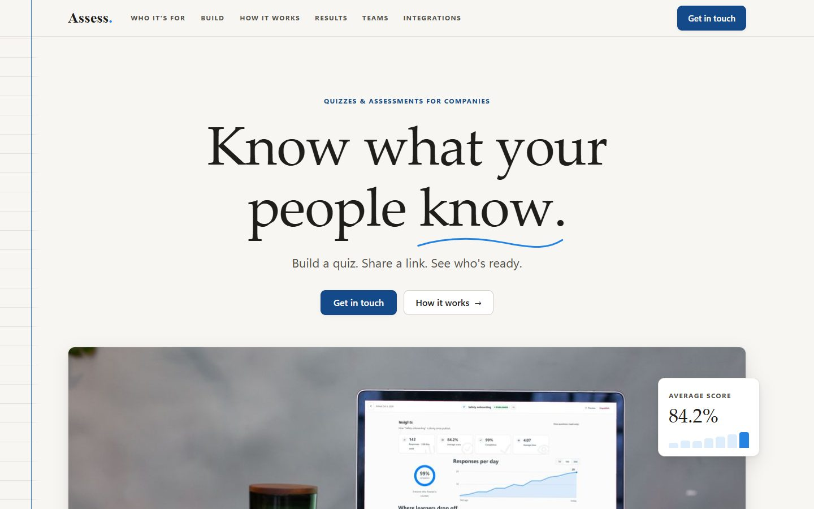
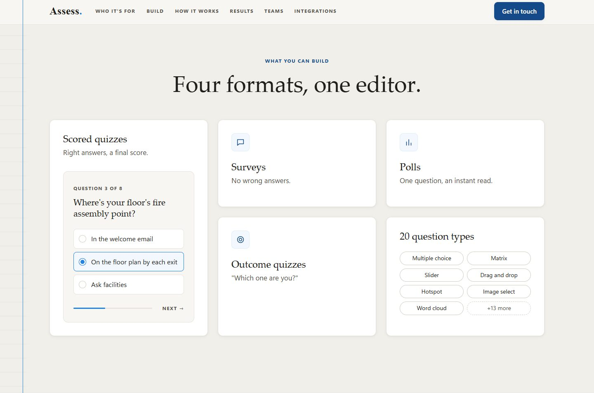
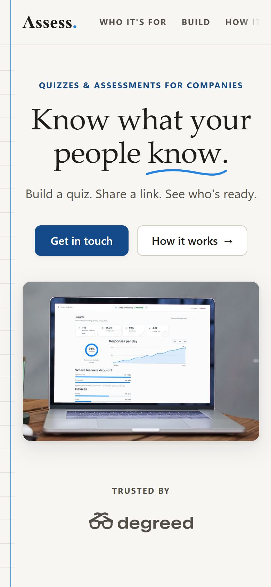

Assess
A quiz and assessment platform for company training teams. I’m a developer on the team building it, and I designed and built its public website.
Know what your people know.
Assess lets a company build scored quizzes, surveys, polls, and outcome quizzes, share them with a link or an embed, and see every response. Its main job is training: onboarding checks, compliance training, and team surveys.
I work on the platform as a developer. I also took on its public site, assess.llc, from planning the page with the team to launching it.


Show the product, say less.
The page went through several rounds with the team. Each decision below came out of that feedback.
A real screen instead of a description
The hero image is the product’s actual Insights screen, captured from the running app and fitted onto a laptop in a desk photo, so visitors see the product before they read about it. The other sections use small working mockups, like a quiz question and a results table.


Cutting the words by more than half
The first full draft had about 613 words. The launched page has about 285. Every section now follows the same pattern: a short label, a headline, at most one sentence, then the visual. Spacing runs on a handful of shared values so the rhythm stays even down the page.
Pen and paper, not sci-fi
The team wanted it to feel like ink on paper rather than a futuristic tech site. The page uses the product’s existing wordmark, a serif “Assess” with a sky-blue period, warm paper colors, and a faint ruled notebook margin down the left edge. No glass effects, gradients, or glows.
Plain HTML, CSS, and JavaScript.
The site is a single static page with no framework and no build step. The product name and contact address live in one small config file, so renaming the product is a one-line change, and a script regenerates the favicon from the same name and colors.
I checked the layout from 320 to 1440 pixels wide. The motion is quiet, and it switches off for visitors who ask their device to reduce motion.

